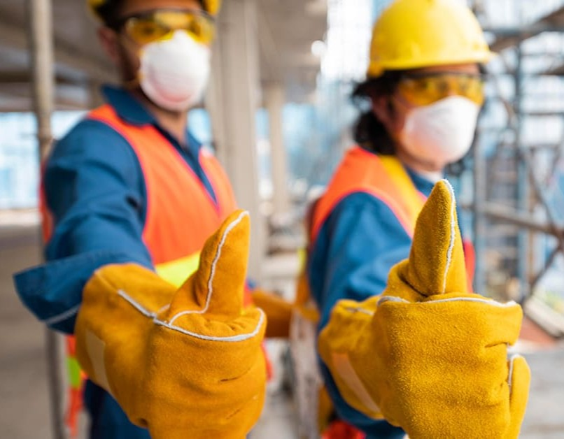
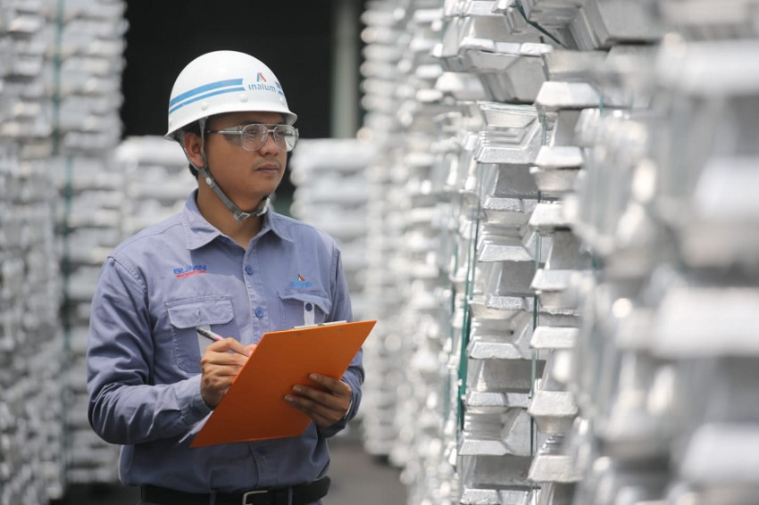
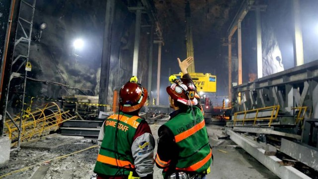

Lingkungan Kerja
Pentingnya Lingkungan Kerja Fisik
Lingkungan kerja fisik meliputi segala kondisi yang mempengaruhi kenyamanan dan keselamatan pekerja, seperti pencahayaan, suhu, kebisingan, dan tata ruang. Tempat kerja yang tertata baik akan membantu karyawan bekerja lebih fokus, efisien, dan terhindar dari risiko cedera.
Dalam konteks industri modern, perusahaan wajib memastikan bahwa setiap area kerja memenuhi standar K3 agar tercipta keseimbangan antara produktivitas dan keselamatan.


Faktor-faktor yang Mempengaruhi Keselamatan Kerja
-
Pencahayaan
Cahaya yang cukup mencegah kelelahan mata dan mengurangi risiko kecelakaan akibat penglihatan terbatas.
Standar ideal: 300–500 lux untuk area kerja umum. -
Suhu & Ventilasi
Suhu ruang yang ideal menjaga stamina dan konsentrasi pekerja agar tetap optimal.
Suhu kerja nyaman: 18–26°C dengan sirkulasi udara baik. -
Kebisingan
Pengendalian kebisingan melindungi pendengaran dan mencegah stres akibat gangguan suara berlebih.
Ambang batas aman: ≤ 85 dB selama 8 jam kerja. -
Tata Letak & Kebersihan
Area kerja yang rapi dan bersih meminimalkan risiko tergelincir, jatuh, atau cedera lainnya.
Jalur evakuasi minimal lebar 1 meter, bebas hambatan.
Contoh Lingkungan Kerja
Lingkungan Aman
- Area kerja memiliki pencahayaan yang cukup untuk mendukung ketelitian dan kenyamanan visual.
- Ventilasi dan sirkulasi udara baik sehingga pekerja tidak merasa pengap atau kelelahan.
- Alat pelindung diri (APD) tersedia dan digunakan sesuai prosedur kerja.
- Jalur evakuasi ditandai dengan jelas dan bebas dari hambatan.
- Peralatan dan area kerja terawat, bebas dari tumpahan, kabel berserakan, atau potensi bahaya lainnya.
Lingkungan Tidak Aman
- Pencahayaan ruangan kurang memadai, membuat penglihatan pekerja terganggu.
- Udara di ruangan pengap, lembap, atau penuh debu tanpa ventilasi yang memadai.
- Kebisingan tinggi dari mesin tanpa pengendalian suara.
- Tata ruang sempit dan tidak ergonomis, menghambat pergerakan pekerja.
- Peralatan diletakkan sembarangan tanpa perawatan, dan tidak terdapat tanda bahaya di area berisiko.
